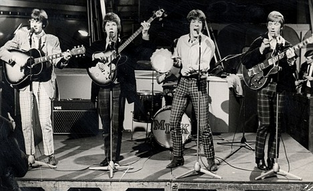

Wednesday, November the 29th, 2017
back to: title, date or indexes

It is a truth universally acknowledged that a devotee of Hooting Yard is equally a fan of ’60s beat combo Dave Dee, Dozy, Beaky, Mick & Tich, known to Bernard Levin as The Dave Dee, Dozy, Beaky, Mick & Tich. That being so, readers will be palpitating with overexcitement at the news that—at long last!—a tribute band has been formed to recreate, as closely as possible, the authentic sound of Dave Dee, Dozy, Beaky, Mick & Tich-style poptasticness.
But this is no mere tribute band. It is a supergroup, and a multi-disciplinary one at that, drawing in not just musicians but sports stars, politicians, and statesmen from around the world. Thus we have the Ivory Coast footballer Yaya Touré; the avant garde octogenarian and widow of (in the immortal words of Kenneth Williams) “that Beatle who married an Asiatic woman”, Yoko Ono; the Paris-born American cellist Yo-Yo Ma; and the Israeli politicians Tzipi Livni and Binyamin Netanyahu, known affectionately as “Bibi”.
The group—Yaya, Yoko, Yo-Yo, Tzipi & Bibi—are not yet on tour, nor in the recording studio. In fact they have not yet met up with each other to rehearse such timeless classic hits as “Margareta Lidman”, “He's A Raver,” and “The Wreck Of The ‘Antoinette’”. It is my fond hope that, reading this press release, each of the five will realise the urgency of making this happen. The future of pop music is in their hands.
ADDENDUM : Dave Dee and his pals graced these pages back in October 2010, when they encountered a bricklaying witch.
Hooting Yard on the Air, May the 9th, 2019 : “Hiking Pickle Revisited” (starts around 28:13)